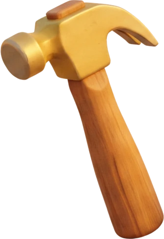

0%
„Matei & Peter" e un serial 3D de animație pentru copii de 2–6 ani. Episoade de 3–4 minute, un băiat de patru ani, un cățel care nu vorbește niciodată, un atelier cald și o problemă pe zi. Documentul ăsta e singura sursă de adevăr: dacă un lucru nu e aici, nu e încă în canon.
Preșcolari. Nu citesc, deci lumea nu are text.
Compilații de 25–40 min la fiecare 4–5 episoade.
3D stil Pixar, lumină caldă aurie, profunzime mică de câmp.
În fiecare episod și pe fiecare produs. Nimic altceva nu are voie să fie semnul seriei.
O problemă e doar ceva ce n-a fost construit încă — și fiecare greșeală e un pas din construcție.
Consecință obligatorie de structură: greșeala trebuie să fie a lui Matei, pe ecran. Un episod fără greșeală proprie nu e un episod din seria asta.
Greșeala e informație, nu vină.
Animația se generează o singură dată, în engleză, cu lipsync nativ. Româna se face pe episodul EN deja blocat: voce nouă și un pas de lipsync peste clipul randat. Nu se regenerează niciodată animația pentru RO.
Orice firmă lizibilă în cadru înseamnă un al doilea randat pentru RO. Textul din lume nu a fost scos din estetică — a fost scos ca versiunea română să fie gratuită.
EN se aprobă întâi, complet, cu muzică și montaj. RO se face abia pe episodul EN blocat — altfel dublăm de două ori.
„Oops! Let's fix it!"
„Together we can build anything!"
„What did the wood tell you?"
Un cadru de constatare, unul de gând, apoi acțiune.
„Ai greșit."
Râs pe seama lui
Sunet comic de eșec
Peter sau Luca greșesc în locul lui
Un copil de patru ani prinde dintr-o privire ~2,8 obiecte; la cinci ani ține în memoria de lucru jumătate din cât un adult. De aici plafonul: maximum patru entități cu nume în cadru simultan. Testul de verificare: dacă acoperi cu mâna pe Matei și scena rămâne amuzantă, ai prea multe personaje secundare în ea.
Messy brown hair, big warm brown eyes. Yellow safety goggles pushed up on forehead, dark green ear-protection headphones around neck, plain teal t-shirt with a simple yellow sun symbol and absolutely no text, tool belt, denim shorts to the knee, brown boots.
Beat-ul ochelarilor: coboară pe ochi doar când începe construcția, pe „Let's build!". E cel mai important gest de continuitate din serie.
Dense tight apricot-golden curls all over — springy, well-defined ringlets, looser waves on the floppy ears. Yellow safety goggles and a brown leather collar with a round gold "P" tag. Tiny — about 35 cm at the shoulder.
Funcția dramatică: Peter găsește ce Matei nu vede. Ajută aducând, săpând, mirosind, arătând cu nasul.
~2 ani și jumătate. Șapcă teal purtată invers, bluză bej simplă, pantaloni scurți de blugi, bocanci. Cap mare, rotund, obraji plini — se citește din prima ca fiind mai mic decât Matei. Cară mereu un obiect nepotrivit.
Frecvență propusă: ~2 din 3 episoade.
Trăiește în copacul care se vede pe fereastra atelierului. Tot timpul, în fiecare episod. Nu în Pod.
Nu „ai învățat să ai răbdare", ci „lemnul strâmb tot casă a ajuns."
Uneltele au personalitate, dar personalitatea vine din mișcare, ritm și sunet. Dacă uneltele capătă replici, cade regula „Peter nu rostește cuvinte" și atelierul nu mai e un atelier pe care copilul îl poate imita acasă. Fără guri, fără ochi desenați, fără dialog.
Entuziast, nerăbdător, lovește înainte să se gândească. Sare pe loc, se smucește spre cui înainte de vreme.
bam-bam dublu, grăbit
Bam e graba lui Matei, scoasă în afara lui, într-un obiect. Când Matei îl oprește cu mâna, se vede pe ecran cum arată autocontrolul.
Pedantă, ordonată, nu suportă aproximările. Se întinde singură pe lemn ca să corecteze, se retrage sec dacă e ignorată.
fșșș-clac
Singura unealtă care provoacă Beat-ul greșelii. „Măsoară de două ori" ca obiect, nu ca lecție rostită.
Calmă, tăcută, spune adevărul fără să judece. Bula fuge într-o parte când e strâmb, se așază la mijloc când e drept.
un ploc mic, mulțumit
Funcționează identic în EN și RO, fără traducere și fără lipsync. Cea mai ieftină unealtă pedagogică din atelier.
Bunicul calm, imobil, de încredere. Nu se mișcă niciodată; doar se strânge, ferm și lent.
scârțâit adânc de metal
Gratuită din punct de vedere al atenției: e prinsă de banc, nu concurează cu nimeni.
Bam vrea să bată acum, Snap vrea să măsoare întâi. Se contrazic fără o vorbă — un dialog vizual care se repetă în fiecare episod și pe care copilul îl învață ca pe un joc. Când Matei ține cu Bam, urmează greșeala. Când ține cu Snap, iese drept.
Ordinea firească: Bam se grăbește → Snap protestează → Matei alege → Bubble arată rezultatul.
Restul atelierului — fierăstrăul, șurubelnița, cleștele, pensula, borcanul cu cuie — sunt unelte obișnuite. Pot vibra sau sclipi ca reacție de fundal, dar nu au nume, nu au caracter și nu se prezintă niciodată publicului.
Dormitorul sus → scara de lemn → atelierul jos → ușa → grădina și stejarul Bufniței → poteca prin pădure → cascada. Fără tăietură de teleportare. Un copil de patru ani poate desena harta după trei episoade — ăsta e testul.
Geografie fixă, nu se contrazice niciodată: ușa stânga, fereastra arcuită dreapta, bancul centru, panoul cu unelte în spatele bancului, culcușul lui Peter colț dreapta, tabla lângă ușă, scara spre Pod în fund dreapta. Lumina intră mereu pe fereastra arcuită, din dreapta.
Cabană-atelier de lemn între copaci verzi, raze de dimineață prin frunze, flori de câmp, o potecă mică spre ușă, păsări pe o ramură.
Cabana e casa lor: atelierul jos, dormitorul sus, o scară între ele. Două paturi — al lui Matei cu pătură teal, al lui Luca mai mic, cu pătură portocalie și bară. O fereastră rotundă spre același stejar. Un cârlig de lemn lângă patul lui Matei, unde se atârnă ochelarii.
Părinții: există, dar nu se văd și nu se aud niciodată. În clipa în care intră un adult în cadru, el devine cel care rezolvă problema.
Se folosește doar în episoadele unde construcția trebuie testată de natură: barca, roata de apă, podul pentru furnici, barajul.
Cascada înseamnă: construcția e pe punctul de a fi testată.
Groși, lentile transparente, curea închisă. Ai lui Matei pe frunte; Peter are o pereche identică. Lentilele prind o sclipire pe beat-urile de poveste.
Galbene, cu palmă de piele întoarsă gri-maro și manșetă scurtă. Nu se poartă tot timpul: se trag pe mâini înainte de partea grea — când urmează ceva care zgârie, taie sau înțeapă. Ochelarii coboară la „Let's build!"; mănușile vin când munca devine serioasă.
Cutie de lemn ornată, cu soarele sculptat pe capac, pe bancul de lucru. Strălucește auriu-cald prin îmbinări, se deschide singură, clinchet blând.
Sul de hârtie cu linii aurii luminoase, arătând obiectul care trebuie construit. Iese din Cutia Surpriză.
Recuzită recurentă, fără nume: uneltele de pe panou, menghina, lăzile cu pictograme, tabla cu desene de cretă, culcușul cu amprentă de lăbuță, ghirlandele, scaunul verde, plantele, talașul, plăcuța de lemn cu ochelarii sculptați.
Ritualul de deschidere e identic în fiecare episod și nu se scurtează, nu se reordonează, nu se sare. E contractul de familiaritate al seriei cu copilul.
Aceleași forme groase, rotunjite, cu contur maro-ciocolată ca tot restul lumii. Pictogramele se desenează în aceeași gramatică — dacă un semn nou nu arată ca și cum ar fi fost sculptat în același atelier, nu intră.
Culorile de mai jos au fost extrase din materialele deja generate, nu inventate la masă. Galbenul e semnul seriei și se păstrează pentru ochelari, soare și accent. Nu se adaugă altele.
Caldă, aurie, în fiecare cadru. Profunzime mică de câmp. Lumina intră pe fereastra arcuită, din dreapta. Cascada e singura locație cu virare rece aprobată — dar soarele de deasupra rămâne cald.
Titlurile în fontul de afiș, rotund și gros, ca literele din logo. Textul în Comfortaa — rotund, deschis, cu diacritice complete. Orice font ales trebuie să aibă ă â î ș ț; butoanele de mai jos verifică asta singure, în browser.
Aa Bb Cc · Ăă Ââ Îî Șș Țț · 0123
Aa Bb Cc · Ăă Ââ Îî Șș Țț · 0123
Aa Bb Cc · Ăă Ââ Îî Șș Țț · 0123
Nicăieri în lumea filmată. Tipografia trăiește doar în materialele despre serie — deck, site, ambalaj, generic. În cadru nu există literă. Vezi secțiunea 13.

Firma atelierului, tabla cu planul zilei și etichetele de pe lăzi — tăiate. Nu se scriu nici în engleză, nici în română. Nu există. Clauza obligatorie în fiecare prompt: no text, no lettering, no signs, no written words anywhere.
Asta e tot. Nicăieri altundeva, niciun cuvânt.
Zero text ars în imagine = zero re-randări pentru dublaj.
Litera scrisă greșit era cea mai frecventă eroare din fișele generate. Fără text, dispare o clasă întreagă de rebut.
Textul era pentru părinți și pentru noi. Pictograma vorbește direct cu copilul.
Seria se poate vinde oriunde fără să se atingă un singur cadru.
Fiecare pas depinde de cel dinainte. Personajele și decorurile sunt Elements, nu Souls. Un cadru aprobat devine style master și se dă drept referință tuturor celorlalte cadre din secvență.
Un atelier cald și o problemă practică
O greșeală vizibilă, îndreptată de el
Un cățel care găsește ce nu se vede
O bufniță care întreabă, nu care predă
Un personaj negativ sau o amenințare
Un adult care rezolvă problema
Șapte unelte care vorbesc
Un cadru cu text scris în el